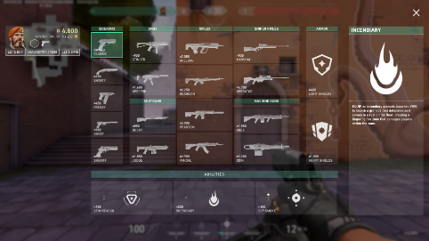
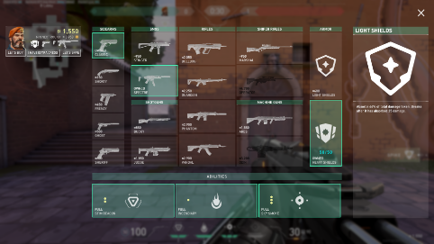
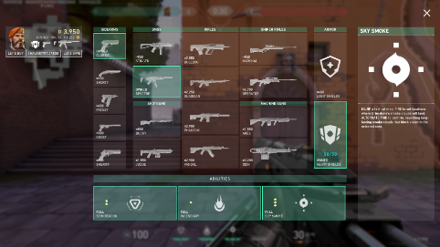
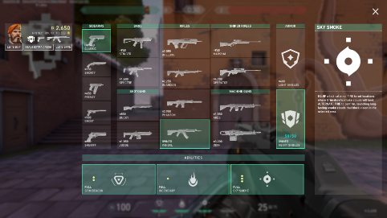
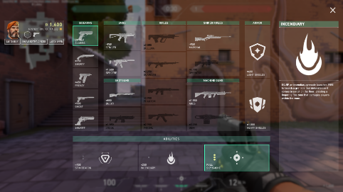
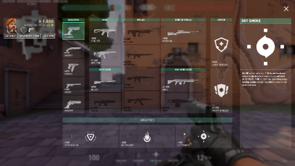

Den andre runden (force)
La oss tenke at laget ditt vant den første runden. Hvis laget ditt vant en runde, så får du 4000 kreditter. De kan du bruke for å kjøpe et bedre våpen og et skjold. Skjoldet gir deg 25 ekstra liv for 400 kreditter og 50 ekstra liv for 1000 kreditter. Det er viktig å tenke på at hvis du hadde igjen fra 20-24 skjold fra forrige runde, så bør du ikke kjøpe et nytt, fordi da betaler du 400 kreditter for bare noen få ekstra liv.
På en force runde pleier man å kjøpe en farm gun. Den heter slik, fordi den passer godt til å drepe motstanderne når de ikke har muligheten til å kjøpe et bedre våpen, og «farming» i spill betyr å tjene noe lettjent i spillet på kort tid. En vanlig måte å kjøpe ting på en force runde er lett/tungt skjold, specrte, og egenskapene til din karakter.
En force runde kan også bli til en bonus runde. Med en bonus runde menes det at det er best for laget ditt å spare penger istedenfor å kaste farm guns og kjøpe dyre våpen istedenfor. Hvis du sparer penger, får du mer penger i den neste runden, enn hvis du ikke hadde spart. En bonus runde kan være grei å gjennomføres flere ganger i kampen.
Hvis laget ditt taper den første runden, må dere gjøre det som kalles for en eco runde. Dere må altså spare penger, ved å ikke kjøpe noen ting unntatt egenskapene til karakterene deres, og de må dere helst også ikke bruke, med mindre det er stor sannsynlighet for å vinne runden hvis dere bruker dem.
Grunnen til at dere må spare alle pengene hvis dere tapte den første runden, er fordi du får mindre penger den neste runden hvis du ikke sparer, og derfor kan du ikke kjøpe gode våpen på den neste runden. Samtidig kommer motstanderlaget til å ha mange penger og gode våpen som du ikke har nok penger til å kjøpe. Derfor er det lurt å spare på den andre runden hvis dere tapte den første.
Den forrige varianten kalles gjerne full eco, fordi dere kjøper ingenting. Når dere er på midten av kampen og dere har ikke nok penger for gode våpen, bør dere lage en vanlig eco. På en vanlig eco er det ofte greit å kjøpe en pistol og lett skjold, men det hender at man må begrense seg maksimalt på slike runder også. Dette skjer hvis du spiller for en karakter som har veldig dyre egenskaper eller hvis du har veldig lite penger igjen. For å se på minimum-summen som du kommer til å ha på den neste runden, så kan du gå inn på butikkmenyen og se på teksten under pengene dine.
Full buy kalles også bare for buy. Det er en runde hvor du kjøper et tungt skjold og et av de mest brukte våpnene, vandal eller phantom. I tillegg må du kjøpe alle eller nesten alle egenskapene til karakteren din. En full buy runde bør du gjøre bare fra og med 3. runde, hvis du ikke har en bonus runde.
Den andre runden (eco)
Den tredje runden (full buy)





